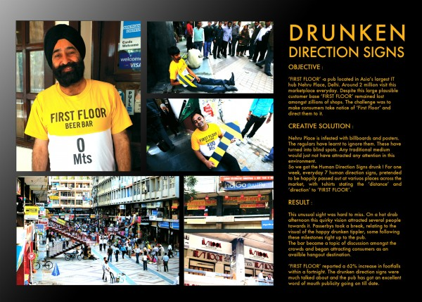

В одном из крупнейших торговых центров индийском городе Неру работает паб «Первый этаж». Несмотря на то, что сам торговый центр ежедневно помещают 2 миллиона человек до паба, к сожалению владельцев доходили далеко не все. Можно было, конечно выставить штендер, как это делают, к примеру у нас на Соборной, 8. Но штендеров уже было много, а толку от них мало. Как направить покупателя к себе?
Решение было найдено. Владельцы паба нашли 7 человек, которые правдоподобно могли сыграть пьяных. Они расселись и разлеглись на разном удалении от самого паба. Все они были в фирменных бело-жёлтых футболках, а в руках у них были стрелки с указанием направления и расстоянием до паба.
В течение 2 недель, необычная реклама привлекла внимание огромного количества людей. Аниматоры (если их так можно назвать) стали достопримечательностью торгового центра, а выручка в пабе увеличилась на 62%.
